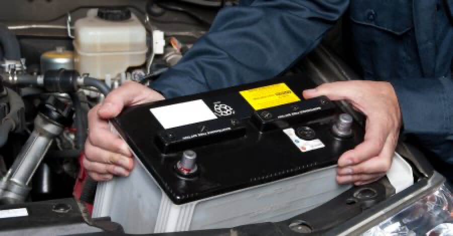
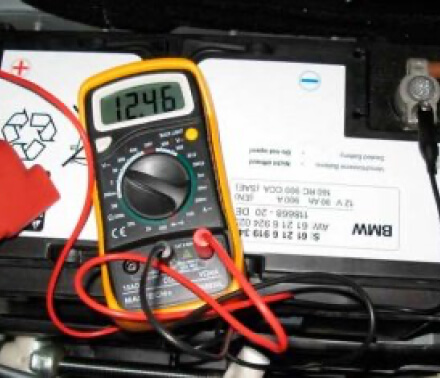

Знакомая ситуация: вышли из салона авто на пару часов и забыли выключить фары. Как следствие, получаете букет проблем, связанных с состоянием аккумулятора. Если он разрядится по максимуму, то уже не удастся избежать дорогостоящего ремонта авто, да и вообще безопасно тронуться с места.
Цитата
Загрязнения с корпуса убираются плотной ветошью, смоченной в содовом растворе. Как его приготовить? – Разведите одну столовую ложку соды в граненом стандартном стакане с теплой водой.
Механик – Николай Николаевич

Три способа проверить состояние аккумулятора (h2)
1. Визуальный осмотр. (h3)
Достаньте аккумулятор, разместите его на ровной поверхности, обеспечьте хорошее освещение, тщательно осмотрите короб автомобильного оборудования. Во-первых, не допускается деформация корпуса, даже незначительные повреждения. Во-вторых, грязь, следы от утечек электролита – вообще опасно, потому что процесс ухудшения функционирования аккумулятора уверенно стартовал, остановить его может лишь комплексный ремонт автомобилей.
Совет-напоминание (h4)
Щуп мильтиметра, окрашенный в красный цвет, присоединяется в зоне плюса клеммы аккумулятора. А черный щуп прибора с отрицательным зарядом приближают к корпусу тестируемого агрегата в местах утечек и повреждений. Оцениваются показатели мультиметра.
2. Технический контроль.
Используйте мультиметр для замеров электрических параметров. Трезво оцените полученные результаты, проверьте уровень разряженности батареи, ее соответствие норме. Понадобится ремонт авто в том случае, если цифра на табло будет меньше 12,1 В. Значит, идет угасание потенциала аккумулятора. Еще шаг в одну целую вниз, и агрегат будет разряжен на сто процентов. Если у вас не оказалось под рукой мультиметра, то советуем обратиться к электрикам в Астане, ну или купить в магазине.
Совет-напоминание
Займите удобное положение, откройте доступ к банкам аккумулятора, возьмите в руку ареометр и опустите его вертикально до предела, то есть до сетки сепаратора. Зафиксируйте мерный прибор на несколько секунд в таком положении, а потом доставайте его и снимайте показания. Норма электролита – 10-15 мм.

3. Оценка состояния электролита.
Для проверки уровня и плотности электролита используют ареометр. Прибор представляет собой стеклянно-медную трубку, при помощи которой выполняются замеры плотности жидкости. Его регулярно используют для тестирования и ремонта автомобилей. Наберитесь терпения и выполняйте замеры в каждой емкости аккумулятора.
Обратите внимание на цвет жидкости — она должна быть прозрачной! Никакие примеси не допускаются.
Итак, к жидкостям, с которыми имеет дело автомобиль, относятся бензин, масло, охлаждающая жидкость, тормозная жидкость, стеклоочистительная жидкость, трансмиссионное масло, жидкость для механизма усиленного рулевого управления и жидкость автоматической коробки передач. Все автомобили схожи, по крайней мере, в том, что в них используются бензин, масло и тормозная жидкость. В двигателях с воздушным охлаждением (например, в старых моделях «Фольксваген Жук») нет охлаждающей жидкости. Кроме того, ваша модель автомобиля может иметь или не иметь жидкости для механизма усиленного рулевого управления и жидкости автоматической коробки передач.
- Откройте капот и визуально осмотрите блок двигателя и моторный отсек. Многие виды утечек могут быть легко обнаружены невооруженным глазом.
- Обратите внимание на то, что для того, чтобы найти утечку, вам не совсем обязательно знать название вытекающей жидкости или название того механизма машины, из которой эта жидкость просачивается.
- Возьмите фонарь и внимательно посмотрите, нет ли под машиной и, прежде всего, под двигателем влажных пятен или капель, цепляющихся за нижнюю часть транспортного средства.
- Если признаков утечки не видно, положите большой кусок гофрированного картона и припаркуйте автомобиль так, чтобы двигатель оказался над ним. Ручкой отметьте положение колес.
- На следующее утро уберите картон. Отметьте все появившиеся капли относительно маркировок колеса. Эта информация поможет вашему механику диагностировать проблему.
- Откройте капот и визуально осмотрите блок двигателя и моторный отсек. Многие виды утечек могут быть легко обнаружены невооруженным глазом.
- Обратите внимание на то, что для того, чтобы найти утечку, вам не совсем обязательно знать название вытекающей жидкости или название того механизма машины, из которой эта жидкость просачивается.
- Возьмите фонарь и внимательно посмотрите, нет ли под машиной и, прежде всего, под двигателем влажных пятен или капель, цепляющихся за нижнюю часть транспортного средства.
- Если признаков утечки не видно, положите большой кусок гофрированного картона и припаркуйте автомобиль так, чтобы двигатель оказался над ним. Ручкой отметьте положение колес.
- На следующее утро уберите картон. Отметьте все появившиеся капли относительно маркировок колеса. Эта информация поможет вашему механику диагностировать проблему.
| Вид нарушения | Статья коап | Штраф (МРП 2 269 ₸) | Сумма штрафа (₸) |
|---|---|---|---|
| СКОРОСТЬ | |||
| Превышение скорости на 10-20 км/ч | ст. 592 ч. 1 | 10 | 22 690 |
| Проезд на запрещающий сигнал светофора или на запрещающий жест регулировщика. | ст. 592 ч. 1 | 10 | 22 690 |
| ПРОЕЗД ПЕРЕКРЕСТКОВ, ПЕРЕХОДОВ, ПЕРЕЕЗДОВ | |||
| Выезд на перекресток или пересечение проезжей части дороги в случае образовавшегося затора, который привел к созданию препятствия (затора) для движения транспортных средств в поперечном направлении. | ст. 592 ч. 1 | 10 | 22 690 |
| Превышение скорости на 10-20 км/ч | ст. 592 ч. 1 | 10 | 22 690 |
| Превышение скорости на 10-20 км/ч | ст. 592 ч. 1 | 10 | 22 690 |